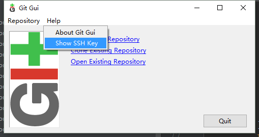

1.git shell方法
打开git gui，

然后将本机私钥复制到远程服务器~/.ssh/authorized_keys中，保存，即可
之后使用git shell即可免密登陆该远程服务器
2.babun方法
若本机是windows，需先搭建linux环境，可用babun
本文会告诉你怎样在 CentOS/RHEL 上设置 SSH 免密码登录。自动登录配置好以后，你可以通过它使用 SSH （Secure Shell）和安全复制 （SCP）来移动文件。
SSH 是开源的，是用于远程登录的最为可靠的网络协议。系统管理员用它来执行命令，以及通过 SCP 协议在网络上向另一台电脑传输文件。
通过配置 SSH 免密码登录，你可以享受到如下的便利：
用脚本实现日常工作的自动化。
增强 Linux 服务器的安全性。这是防范虚拟专用服务器（VPS）遭受暴力破解攻击的一个推荐的方法，SSH 密钥单凭暴力破解是几乎不可攻破的。
什么是 ssh-keygen
ssh-keygen 是一个用来生成、创建和管理 SSH 认证用的公私钥的工具。通过 ssh-keygen 命令，用户可以创建支持SSH1 和 SSH2 两个协议的密钥。ssh-keygen 为 SSH1 协议创建 RSA 密钥，SSH2 则可以是 RSA 或 DSA。
什么是 ssh-copy-id
ssh-copy-id 是用来将本地公钥拷贝到远程的 authorized_keys 文件的脚本命令，它还会将身份标识文件追加到远程机器的 ~/.ssh/authorized_keys 文件中，并给远程主机的用户主目录适当的的权限。
SSH 密钥
SSH 密钥为登录 Linux 服务器提供了更好且安全的机制。运行 ssh-keygen 后，将会生成公私密钥对。你可以将公钥放置到任意服务器，从持有私钥的客户端连接到服务器的时，会用它来解锁。两者匹配时，系统无需密码就能解除锁定。
在 CentOS 和 RHEL 上设置免密码登录 SSH
以下步骤在 CentOS 5/6/7、RHEL 5/6/7 和 Oracle Linux 6/7 上测试通过。
节点1 : 192.168.0.9 节点2 : 192.168.l.10
步骤1(可无视) :
测试节点1到节点2的连接和访问：
[root@node1 ~]# ssh root@192.168.0.10
The authenticity of host '192.168.0.10 (192.168.0.10)' can't be established.
RSA key fingerprint is 6d:8f:63:9b:3b:63:e1:72:b3:06:a4:e4:f4:37:21:42.
Are you sure you want to continue connecting (yes/no)? yes
Warning: Permanently added '192.168.0.10' (RSA) to the list of known hosts.
root@192.168.0.10's password:
Last login: Thu Dec 10 22:04:55 2015 from 192.168.0.1
[root@node2 ~]#
步骤二：使用 ssh-key-gen 命令生成公钥和私钥，这里要注意的是可以对私钥进行加密保护以增强安全性。
步骤三：
[root@node1 ~]# ssh-keygen
Generating public/private rsa key pair.
Enter file in which to save the key (/root/.ssh/id_rsa):
Enter passphrase (empty for no passphrase):
Enter same passphrase again:
Your identification has been saved in /root/.ssh/id_rsa.
Your public key has been saved in /root/.ssh/id_rsa.pub.
The key fingerprint is:
b4:51:7e:1e:52:61:cd:fb:b2:98:4b:ad:a1:8b:31:6d root@node1.ehowstuff.local
The key's randomart image is:
+--[ RSA 2048]----+
| . ++ |
| o o o |
| o o o . |
| . o + .. |
| S . . |
| . .. .|
| o E oo.o |
| = ooo. |
| . o.o. |
+-----------------+
安装目录为（如C:\Users\wzxicy2221\.babun）
先找到公钥目录(~\home\wzxicy2221\.ssh)
给自己的私钥600权限
chmod 600 /.ssh/id_rsa
用 ssh-copy-id 命令将公钥复制或上传到远程主机，并将身份标识文件追加到节点2的 ~/.ssh/authorized_keys 中：
[root@node1 ~]# ssh-copy-id -i ~/.ssh/id_rsa.pub root@192.168.0.10
root@192.168.0.10's password:
Now try logging into the machine, with "ssh '192.168.0.10'", and check in:
.ssh/authorized_keys
to make sure we haven't added extra keys that you weren't expecting.
步骤四：验证免密码 SSH 登录节点2：
[root@node1 ~]# ssh root@192.168.0.10
Last login: Sun Dec 13 14:03:20 2015 from www.ehowstuff.local